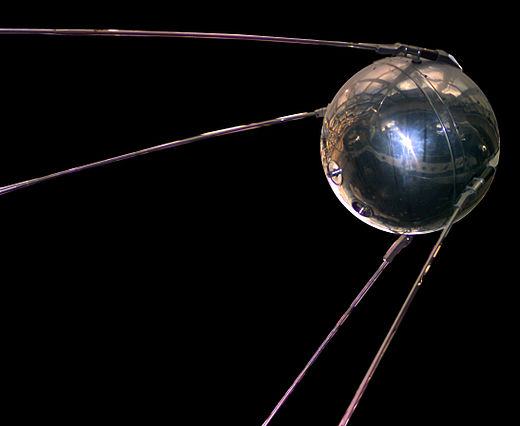
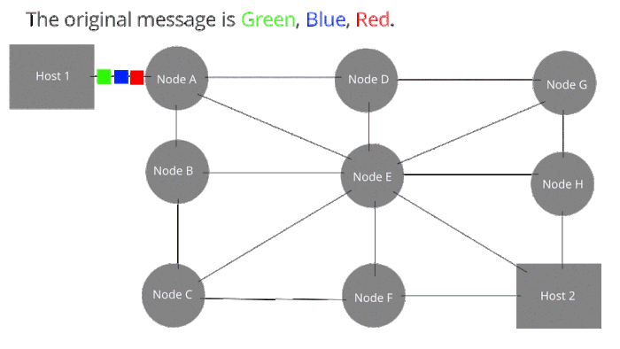
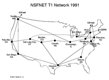

Timeline
Sputnik scare occured
In the early 1950s the US was the dominant world power. The U-2 spy plane gave them the knowledge that they had the advantage in nuclear capability. However when the Sputnik 1 launched the media went into panic. The New York Times stated that the launch was a major triump for Russian Communism.
Invention of packet switching
Packet switching is a method of sending data over the digital network through packets. Each packet has a header and a payload. The data held in the header directs where the packet goes to reach the destination. In the early 1960s Paul Baran created the concept of this to be fault tolerant and efficent.
ARPAnet is formed
ARPAnet or Advanced research projects agency network is a part of the U.S defense department. Its goal was to link computers in Pentagon funded institutions with telephone lines. The cold war made military commanders seek out a communication system with no central core. To be resisitant against enemy attacks at one point.

ARPAnet's first message was sent.
In October 1969 the first message on ARPAnet was sent. The message content was “LO” the message was originally intended to be “LOGIN”, but the system crashed and was only able to show those two letters.

TCP has been invented
TCP is one of the main protocols in the internet protocol suite. TCP gives reliable error-checked stable flow of data. Vint Cerf and Bob Kahn have been credited as creating the foundation of TCP.

Email has been invented
The name comes from Electronic mail as the “mail” is sent electronically. Ray Tomlinson was credited as the creator of the email system. It was originally designed to send information across the ARPAnet. The email system has changed very slightly from back then to today.
NSFnet was created from ARPAnet
The NSFNET was established in 1985. Its purpose was to develop the backbone for the internet. The NSF limited the internet to government agencies and universities until 1989 where the first public ISP was released.
The World wide web was invented.`
Timothy Berners-lee created the World wide web, which is an information system where web resources are identified by URLS that can be hyperlinked. He created the first web browser in 1990.